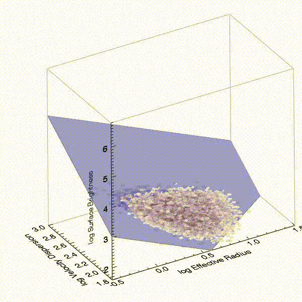
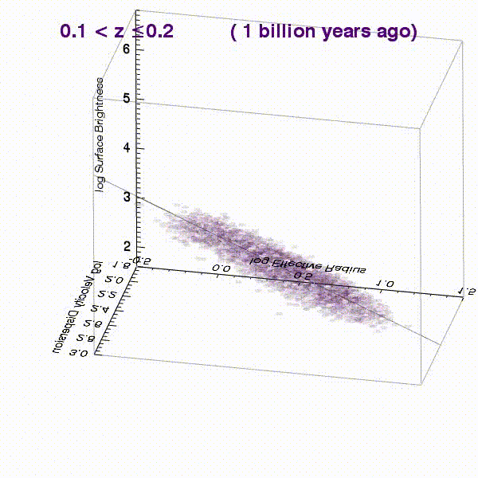
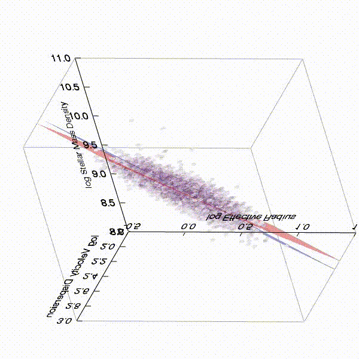
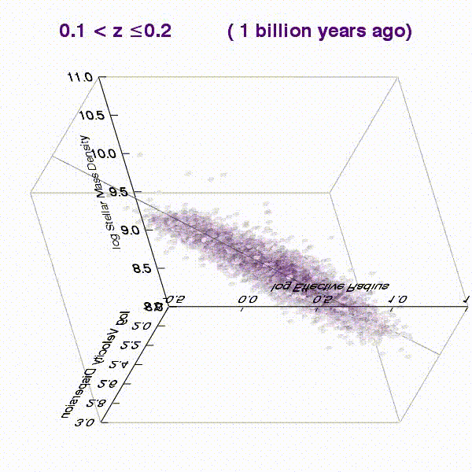

3-D Movies of the Fundamental Plane and Mass Fundamental Plane
(Bezanson+13b)
Rotation around Fundamental Plane
Elliptical galaxies are known to inhabit a tight plane in the 3D parameter space defined by surface brightness, velocity dispersion, and size called the "Fundamental Plane". This movie starts on a face-on view of the Fundamental Plane for quenched galaxies in the Sloan Digital Sky Survey and rotates to the more common edge-on view.
Redshift Evolution of the Fundamental Plane
At earlier epochs, observations suggest that quenched galaxies lie on a Fundamental Plane, however the normalization of that plane evolves with time (shown in this movie with increasing redshift). The simplest interpretation for this evolution is that it derives from the changing stellar mass-to-light ratio of a passively aging population.
Mass Fundamental Plane and Virial Plane
By multiplying surface brightness by stellar mass-to-light ratio (determined from stellar population synthesis modeling of individual galaxies) to convert to stellar mass surface density, one recovers the "Mass Fundamental Plane". This plane is very similar to the plane that could be predicted by the Virial theorem. Both planes are shown in this video (mass FP is blue, Virial plane is red) and the vantage point rotates to show the relative tilt of the mass FP. This tilt indicates that there is a variation in the dynamical to stellar mass ratio across the galaxy population.
Redshift Evolution of the Mass Fundamental Plane
Overwhelming evidence suggests that the evolution of massive galaxies is not purely passive, but instead individual galaxies must also evolve structurally - growing in size and perhaps undergoing changing morphologies. Given that size is one parameter of the Fundamental Plane and galaxy morphologies will also impact their dynamics, this simple explanation is no longer sufficient.
On the other hand, the mass Fundamental Plane explicitly takes the aging stellar populations, but not the structural evolution of galaxies, into account. This movie demonstrates that massive galaxy evolution occurs within the mass fundamental plane: high redshift galaxies inhabit a different region of parameter space than their low-redshift descendants, but they lie within the same Mass Fundamental Plane.